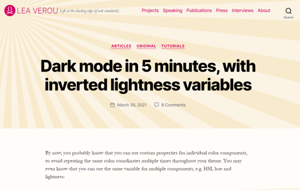
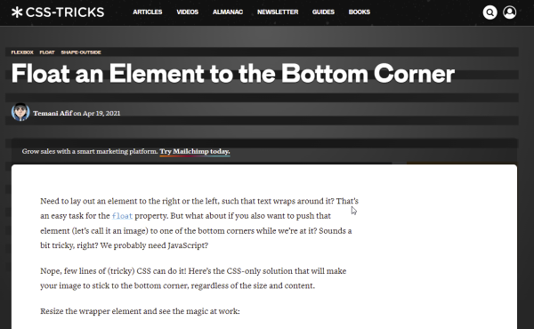
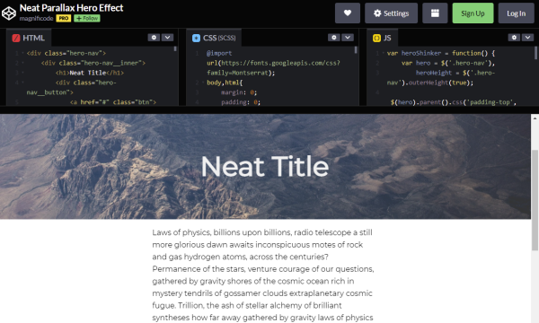
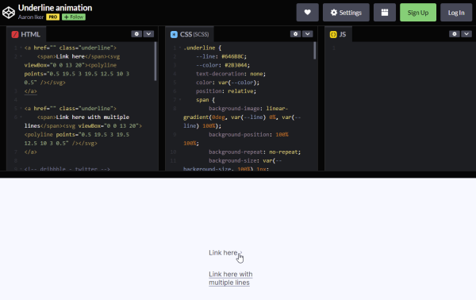
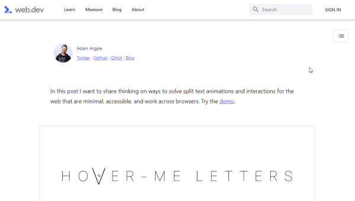
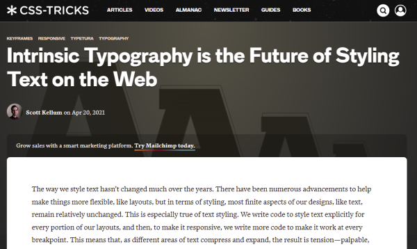
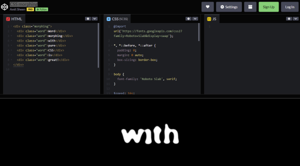
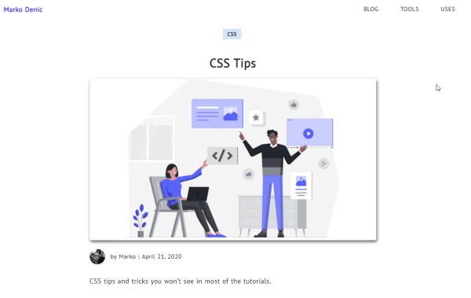

In this month discoveries you will find some posts and pens regarding CSS and its possibilities. It’s always amazing what can be done with it and what cool solutions can be found on the web.
- Sticky Definition Lists
- How to Detect When a Sticky Element Gets Pinned
- Dark mode in 5 minutes, with inverted lightness variables
- Float an Element to the Bottom Corner
- Neat Parallax Hero Effect
- Underline animation
- Building split text animations
- Intrinsic Typography is the Future of Styling Text on the Web
- CSS morphing
- CSS Tips
Sticky Definition Lists
by Chris Coyierhttps://css-tricks.com/sticky-definition-lists
If you want to have an alphabetical definition list on your website, defined by dl, dt and dd tags, you can give your users a better usability on scrolling through this list by using Chris’ sample.
How to Detect When a Sticky Element Gets Pinned
by David Walshhttps://davidwalsh.name/detect-sticky
A very short but useful JS snippet from David Walsh on how to detect if an element is being pinned by CSS’ position:sticky.
Dark mode in 5 minutes, with inverted lightness variables
by Lea Verouhttps://lea.verou.me/2021/03/inverted-lightness-variables/
Providing a light and dark mode on websites is almost common today. Lea show us how we can save time on using HSL hue and lightness in CSS.
Float an Element to the Bottom Corner
by Temani Afifhttps://css-tricks.com/float-an-element-to-the-bottom-corner/
Placing illustration images in the text is a common way to lighten up a web page. Temani shows us how to place such an image at the bottom of a content element.
Neat Parallax Hero Effect
by Dominic Magnificohttps://codepen.io/magnificode/pen/GpqGOm
This Codepen from Dom shows us, how to shrink an hero image on scrolling a page down with little CSS and JavaScript.
Underline animation
by Aaron Ikerhttps://codepen.io/aaroniker/pen/pojaBvb
The default underlined links on web pages are really boring. Aaron gives us on his pen an animated alternative, which uses SVG and CSS.
Building split text animations
by Adam Argylehttps://web.dev/building-split-text-animations/
Animating the title of a web site can be a nice way to add some movement to rigid text. Adam shows us how his approach to animating each character works.
Intrinsic Typography is the Future of Styling Text on the Web
by Scott Kellumhttps://css-tricks.com/intrinsic-typography-is-the-future-of-styling-text-on-the-web/
Flexible layouts have their pitfalls, especially in terms of adjusting text sizes. In this post, Adam talks about what he calls intrinsic typography, where text is scaled by using a Bézier curve to improve readability.
CSS morphing
by Amit Sheenhttps://codepen.io/amit_sheen/pen/xxqYzvm
This pen from Amit is about a pure CSS technique on blending a word into another. Neat effect for countdowns for example.
CSS Tips
by Marko Denichttps://markodenic.com/css-tips/
In this post Marko lists some useful tips on using pure CSS, including Typing Effect, Smooth Scrolling, Truncate text, CSS only modals, custom scrollbars, background-clip text or rounded gradient borders.



Comments